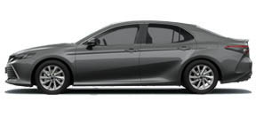
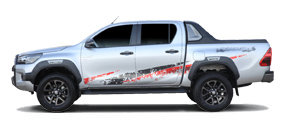
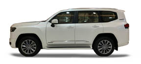
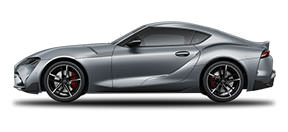

<!DOCTYPE html>
<html lang="ar" dir="rtl"></html>>
<head>
	<meta charset="UTF-8">
	<meta name="viewport" content="width=device-width, initial-scale=1.0">
	<title>أنواع سيارات تويوتا</title>
	<style>
						.car-media {
							display: flex;
							flex-direction: column;
							align-items: center;
							gap: 10px;
						}
						.car-media img {
							width: 300px;
							height: 200px;
							object-fit: contain;
							border-radius: 8px;
							background: #fff;
							border: 1px solid #ddd;
						}
						.car-media video {
							width: 200px;
							height: 200px;
							border-radius: 8px;
							background: #000;
						}
				.car-list {
					list-style: none;
					padding: 0;
				}
				.car-item {
					display: flex;
					align-items: center;
					gap: 18px;
					margin-bottom: 28px;
					background: #f7f7f7;
					border-radius: 8px;
					box-shadow: 0 1px 4px #0001;
					padding: 12px 10px;
				}
				.car-item img {
					width: 110px;
					height: 60px;
					object-fit: contain;
					border-radius: 6px;
					background: #fff;
					border: 1px solid #ddd;
				}
				.car-info {
					flex: 1;
				}
				.car-info h3 {
					margin: 0 0 6px 0;
					color: #d32f2f;
					font-size: 1.1em;
				}
				.car-info p {
					margin: 0;
					font-size: 0.98em;
					color: #333;
				}
		body {
			font-family: 'Cairo', Arial, sans-serif;
			background: linear-gradient(135deg, #f7f7f7 0%, #e3e3e3 60%, #fff 100%);
			min-height: 100vh;
			margin: 0;
			padding: 0;
		}
		header {
			background-color: #d32f2f;
			color: #fff;
			padding: 30px 0 20px 0;
			text-align: center;
	
		nav a {
			padding: 8px 16px;
			border-radius: 6px;
			transition: color 0.2s, background 0.2s, transform 0.2s;
			display: inline-block;
		}
		nav a:hover, nav a:focus {
			color: #ffd600;
			background: #a31515;
			transform: scale(1.08);
			box-shadow: 0 2px 8px #0002;
		}
			box-shadow: 0 2px 8px #0001;
		}
		nav {
			background: #b71c1c;
			padding: 0.5em 0;
			text-align: center;
		}
		nav a {
			color: #fff;
			text-decoration: none;
			margin: 0 18px;
			font-size: 1.1em;
			padding: 8px 16px;
			border-radius: 6px;
			transition: color 0.2s, background 0.2s, transform 0.2s;
			display: inline-block;
		}
		nav a:hover, nav a:focus {
			color: #ffd600;
			background: #a31515;
			transform: scale(1.08);
			box-shadow: 0 2px 8px #0002;
		}
		main {
			max-width: 600px;
			margin: 40px auto;
			background: #fff;
			border-radius: 12px;
			box-shadow: 0 2px 12px #0002;
			padding: 32px 24px;
		}
		h1 {
			margin: 0 0 18px 0;
			font-size: 2.2em;
			letter-spacing: 1px;
		}
		ul {
			font-size: 1.2em;
			line-height: 2;
			padding-right: 24px;
		}
	</style>
</head>
<body>
	<header>
		<h1>أنواع سيارات تويوتا</h1>
	</header>
	<nav>
		 <a href="index.html">الرئيسية</a>
        <a href="انواع السيارات.html">أنواع السيارات</a>
        <a href="سوبرا.html">سوبرا</a>
        <a href="كامري.html">كامري</a>
        <a href="لاند كروزر.html">لاند كروزر</a>
        <a href="كرولا.html">كورولا</a>
        <a href="هايلوكس.html">هايلوكس</a>


	</nav>
	<main>
		<ul class="car-list">
			<li class="car-item">
				
				</div>
			<li class="car-item">
				<div class="car-media">
					
					<video src="تيوتا/camry2.mp4" controls muted poster="camry.png"></video>
				</div>
				<div class="car-info">
					<h3>تويوتا كامري</h3>
					<p>سيارة سيدان متوسطة الحجم، مشهورة بالاعتمادية والراحة واقتصاد الوقود.</p>
					<ul>
						<li>المحرك: 4 سلندر أو 6 سلندر</li>
						<li>القوة: حتى 301 حصان</li>
						<li>ناقل الحركة: أوتوماتيكي 8 سرعات</li>
						<li>استهلاك الوقود: اقتصادي جداً</li>
						<li>أنظمة أمان متقدمة</li>
					</ul>
				</div>
			</li>
			<li class="car-item">
				<div class="car-media">
					
					<video src="تيوتا/كرولا.mp4" controls muted poster="corolla.png"></video>
				</div>
				<div class="car-info">
					<h3>تويوتا كورولا</h3>
					<p>الأكثر مبيعاً في العالم، معروفة بالاقتصاد في الوقود وسهولة الصيانة.</p>
					<ul>
						<li>المحرك: 4 سلندر</li>
						<li>القوة: حتى 168 حصان</li>
						<li>ناقل الحركة: أوتوماتيكي أو CVT</li>
						<li>استهلاك وقود ممتاز</li>
						<li>مقصورة داخلية مريحة</li>
					</ul>
				</div>
			</li>
			<li class="car-item">
				<div class="car-media">
					
					<video src="تيوتا/هايلكس.mp4" controls muted poster="hilux.png"></video>
				</div>
				<div class="car-info">
					<h3>تويوتا هايلوكس</h3>
					<p>شاحنة بيك أب قوية، مثالية للطرق الوعرة والأعمال الشاقة.</p>
					<ul>
						<li>المحرك: ديزل أو بنزين</li>
						<li>القوة: حتى 204 حصان</li>
						<li>دفع رباعي</li>
						<li>حمولة عالية</li>
						<li>مناسبة للطرق الصحراوية</li>
					</ul>
				</div>
			</li>
			<li class="car-item">
				<div class="car-media">
					
					<video src="تيوتا/لاند.mp4" controls muted poster="landcruiser.png"></video>
				</div>
				<div class="car-info">
					<h3>تويوتا لاندكروزر</h3>
					<p>سيارة دفع رباعي فاخرة، معروفة بقوتها في التضاريس الصعبة والرحلات الطويلة.</p>
					<ul>
						<li>المحرك: V6 أو V8</li>
						<li>القوة: حتى 409 حصان</li>
						<li>دفع رباعي دائم</li>
						<li>مقصورة فاخرة</li>
						<li>أنظمة تعليق متطورة</li>
					</ul>
				</div>
			</li>
			<li class="car-item">
				<div class="car-media">
					
					<video src="تيوتا/سوبرا.mp4" controls muted poster="supra.png"></video>
				</div>
				<div class="car-info">
					<h3>تويوتا سوبرا</h3>
					<p>سيارة رياضية عالية الأداء، تشتهر بتصميمها الجذاب وتسارعها القوي.</p>
					<ul>
						<li>المحرك: 6 سلندر توربو</li>
						<li>القوة: حتى 382 حصان</li>
						<li>ناقل حركة أوتوماتيكي رياضي</li>
						<li>تسارع قوي من 0 إلى 100 كم/س في أقل من 4 ثواني</li>
						<li>تصميم رياضي عصري</li>
					</ul>
				</div>
			</li>
